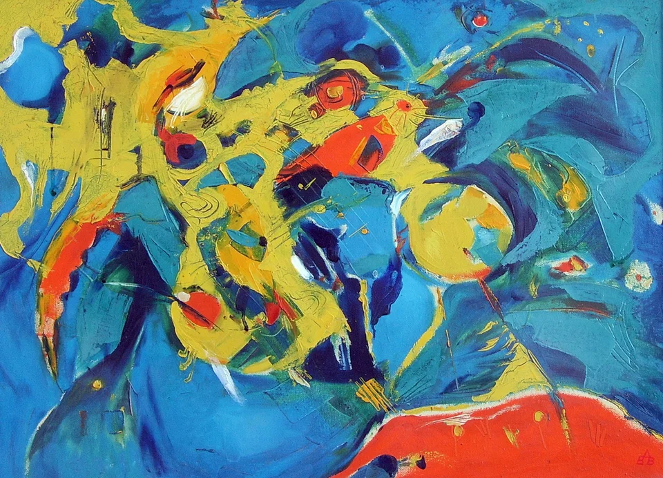

Към съдържанието
Василка Сотирова - художник
Начало
Галерия
Биография
Контакти
EN
English
BG
Български
Обратно към „Абстрактна живопис“

Абстрактна композиция от жълти и оранжеви форми на тъмносин фон
Копирай връзката
← Предишна творба
Следваща творба →